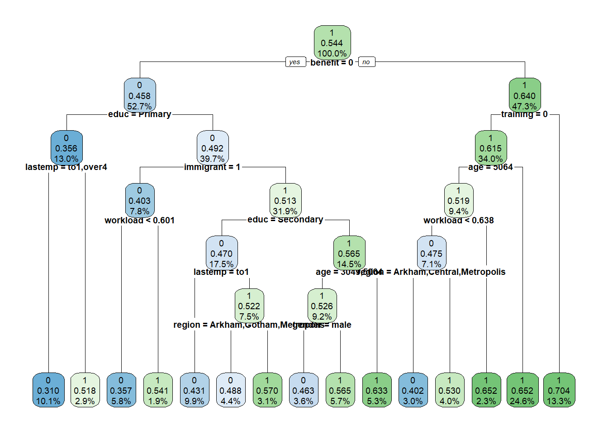
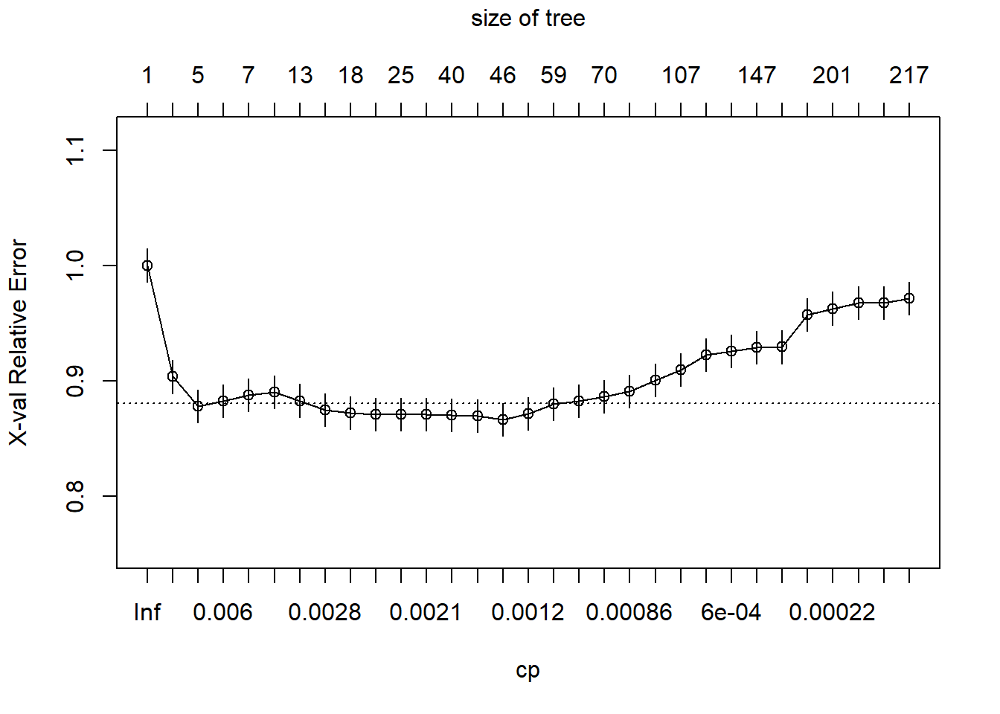
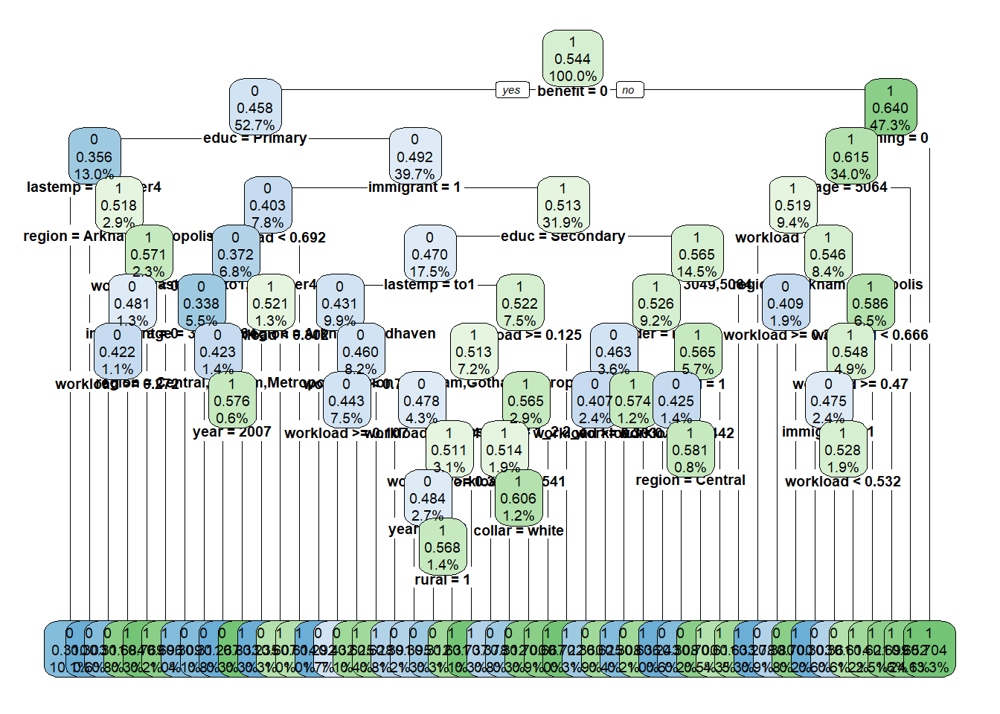
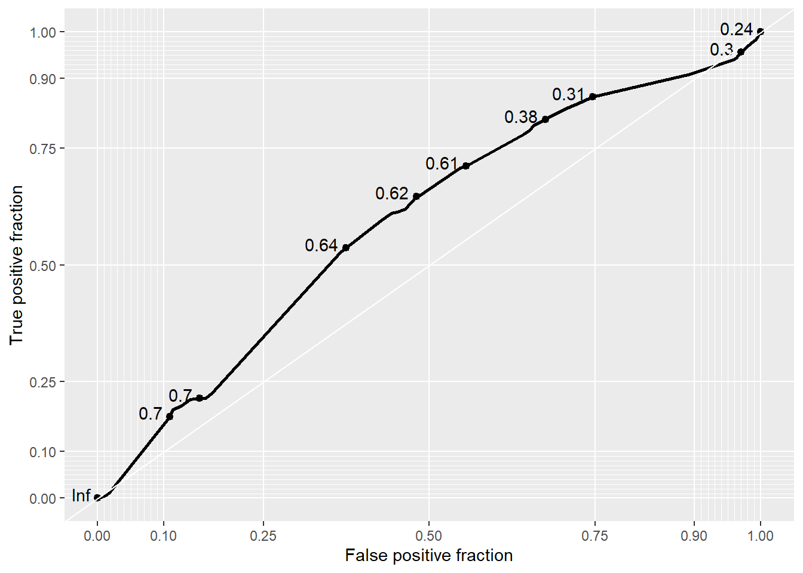
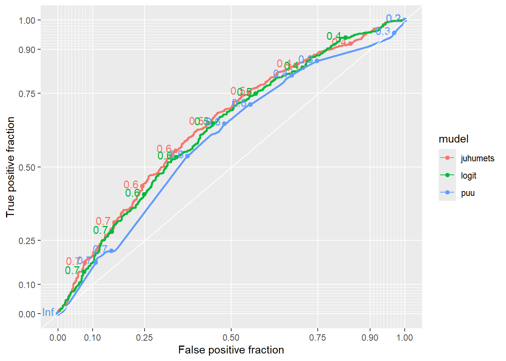
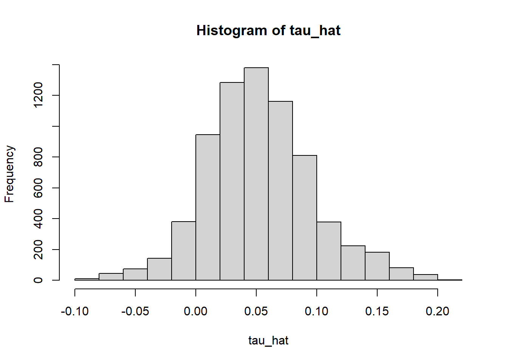
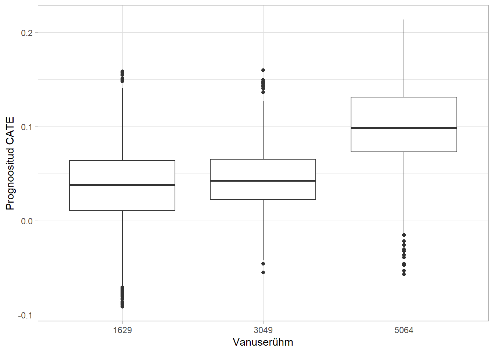
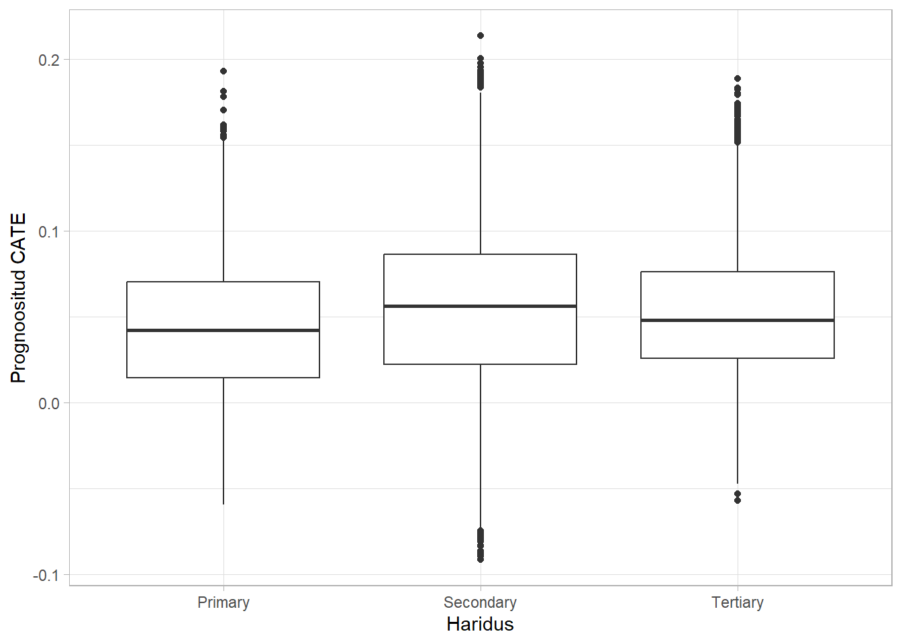

paketid <- c(
"rpart", "rpart.plot", "grf",
"dplyr", "ggplot2", "tidyr", "plotROC"
)
puudu <- paketid[!paketid %in% rownames(installed.packages())]
if (length(puudu) > 0) install.packages(puudu)
library(rpart)
library(rpart.plot)
library(grf)
library(dplyr)
library(ggplot2)
library(tidyr)
library(plotROC)10 Masinõppemeetodid mõju hindamisel: puust kausaalmetsani
TODO: Tähistused ühtlustamata varasemate peatükkidega
Selles peatükis vaatame, kuidas saab masinõppemeetodeid kasutada põhjusliku mõju hindamisel. Keskendume kolmele omavahel seotud meetodile:
- otsustuspuu (decision tree),
- juhumets (random forest),
- kausaalmets ehk põhjuslik juhumets (causal forest).
Põhiidee on liikuda samm-sammult prognoosimisest mõju hindamiseni. Kõigepealt õpime, kuidas puu ja juhumets prognoosivad tulemust \(Y\). Seejärel kasutame juhumetsa regressiooniga kohandamise ehk g-computation loogikas: prognoosime iga inimese tulemuse nii meetmes osalemise kui mitteosalemise korral. Viimaks jõuame kausaalmetsani, mille eesmärk ei ole enam prognoosida \(Y\)-d, vaid otse tingimuslikku põhjuslikku mõju
\[ \tau(x)=E[Y(1)-Y(0)\mid X=x]. \]
Peatüki lõpus seome kausaalmetsa peatükis õpitud AIPW-hinnanguga.
Peatüki lõpuks peaksid oskama:
- selgitada otsustuspuu tööpõhimõtet;
- selgitada, miks üksik puu võib olla ebastabiilne;
- kirjeldada, kuidas juhumets vähendab üksikute puude prognooside hajuvust;
- eristada prognoosimist ja põhjusliku mõju hindamist;
- kasutada juhumetsa regressiooniga kohandamise meetodis;
- defineerida CATE ja selgitada kausaalmetsa eesmärki;
- selgitada, miks causal forest kasutab tulemuse ja meetmes osalemise abimudeleid;
- näidata seost causal forest’i ja AIPW vahel;
- hinnata R-is
grfpaketiga keskmist ja heterogeenset mõju.
10.1 Ökonomeetria ja masinõpe
Traditsioonilise ökonomeetria ja masinõppe rõhuasetused on sageli erinevad.
| Traditsiooniline ökonomeetria | Masinõpe | |
|---|---|---|
| Põhiküsimus | Milline on \(X\) või meetme \(D\) mõju \(Y\)-le? | Kui hästi suudame uut \(Y\) väärtust prognoosida? |
| Mudeli kuju | Sageli määratakse ette | Väga paindlik |
| Tunnuste valik | Majandusteooria ja varasemad uuringud | Sageli andmepõhine |
| Interaktsioonid | Tuleb sageli ise määrata | Meetod võib neid automaatselt leida |
| Mittelineaarsus | Tuleb sageli ise spetsifitseerida | Võib tekkida automaatselt |
| Tõlgendatavus | Sageli hea | Võib olla keerulisem |
| Ülesobitamise oht | Tavaliselt väiksem | Oluline probleem |
| Mudeli valik | Teooria, testid, informatsioonikriteeriumid | Testandmed, ristvalideerimine, OOB |
Masinõppe tugevus on eeskätt paindlik prognoosimine. See on kasulik ka põhjusliku mõju hindamisel, sest mitmed põhjusliku mõju meetodid sisaldavad prognoosimisülesandeid.
Näiteks eelmistes peatükkides kasutasime regressiooniga kohandamist:
\[ \mu_1(x)=E[Y\mid D=1,X=x], \]
\[ \mu_0(x)=E[Y\mid D=0,X=x]. \]
Kui oskame neid kahte funktsiooni hästi hinnata, saame iga inimese jaoks arvutada
\[ \hat\tau_i = \hat\mu_1(X_i)-\hat\mu_0(X_i) \]
ning ATE hinnangu
\[ \widehat{ATE} = \frac{1}{n}\sum_{i=1}^n \left[ \hat\mu_1(X_i)-\hat\mu_0(X_i) \right]. \]
Lineaarne regressioon on ainult üks võimalus funktsioonide \(\mu_1(x)\) ja \(\mu_0(x)\) hindamiseks. Nende asemel võime kasutada ka juhumetsa.
TähtisMasinõpe ei lahenda põhjusliku identifitseerimise probleemi
Paindlikum prognoosimudel ei muuda korrelatsiooni automaatselt põhjuslikuks mõjuks. Vaatlusandmete korral vajame endiselt tingliku sõltumatuse eeldust
\[ \{Y(1),Y(0)\}\perp D\mid X \]
ning ühist tuge
\[ 0<P(D=1\mid X)<1. \]
Masinõpe aitab paindlikumalt modelleerida seoseid pärast seda, kui oleme määratlenud usutava põhjusliku identifitseerimise strateegia.
10.2 Otsustuspuu
Põhiidee
Otsustuspuu jagab andmestiku järjest väiksemateks ja võimalikult homogeenseteks rühmadeks.
Kujutame ette, et tahame prognoosida töötuks jäänud inimese hilisemat palka. Alguses on kõik inimesed ühes rühmas. Algoritm proovib võimalikke küsimusi, näiteks:
- kas vanus on alla 30 aasta?
- kas eelnev palk oli alla 1200 euro?
- kas inimesel on kõrgharidus?
- kas inimene sai töötushüvitist?
Iga küsimus jagab andmed kaheks. Regressioonipuu valib sellise tunnuse ja lõikepunkti, mille korral tekkivates rühmades on \(Y\) väärtused võimalikult sarnased.
Näiteks võib puu olla mõtteliselt järgmine:
Kõik inimesed
|
vanus < 30?
/ \
jah ei
/ \
eelnev palk < 1200? haridus = kõrgharidus?
/ \ / \
... ... ... ...Iga lõplikku rühma nimetatakse leheks (leaf). Uue inimese prognoosimiseks liigume tema tunnuste abil mööda puud kuni vastava leheni.
Regressioonipuu
Kui tulemus \(Y\) on pidev, näiteks palk, kasutame regressioonipuud (regression tree).
Oletame, et puu jagab tunnuste ruumi \(L\) lõpp-piirkonnaks
\[ R_1,R_2,\ldots,R_L. \]
Igas lehes kasutame prognoosina selles lehes olevate inimeste keskmist tulemust:
\[ \bar Y_l = \frac{1}{N_l} \sum_{i:X_i\in R_l}Y_i. \]
Puu prognoos on seega sammfunktsioon
\[ \boxed{ \hat m(x) = \sum_{l=1}^L \bar Y_l I(x\in R_l) } \]
Kõigil sama lehe inimestel on sama prognoos.
Kuidas leitakse parim jaotus?
Pideva väljundtunnuse korral proovib algoritm erinevaid tunnuseid ja lõikepunkte ning valib jaotuse, mis vähendab kõige rohkem jääkide ruutude summat.
Kui mingi kandidaatjaotus tekitab vasaku ja parema lehe \(R_L\) ja \(R_R\), siis vaatame näiteks suurust
\[ RSS = \sum_{i:X_i\in R_L}(Y_i-\bar Y_L)^2 + \sum_{i:X_i\in R_R}(Y_i-\bar Y_R)^2. \]
Valitakse jaotus, mille korral see viga on kõige väiksem.
Seejärel korratakse sama protsessi eraldi mõlemas harus.
MärkusPuu on ahne algoritm
Puu ei proovi korraga kõiki võimalikke lõplikke puustruktuure. Igas sõlmes valitakse sellel hetkel parim järgmine jaotus. Seetõttu nimetatakse seda ahneks (greedy) algoritmiks: iga samm on lokaalselt hea, kuid kogu puu ei pruugi olla globaalselt optimaalne.
Klassifitseerimispuu
Kui tulemus on kategooriline, näiteks
\[ Y_i= \begin{cases} 1,& \text{inimene töötab 24 kuu pärast},\\ 0,& \text{inimene ei tööta}, \end{cases} \]
kasutame klassifitseerimispuud (classification tree).
Leht võib anda näiteks prognoosi
\[ \widehat P(Y=1\mid X\in R_l)=0.72. \]
Kui kasutame klassifitseerimise lävendit 0.5, prognoosime sellise inimese puhul \(Y=1\).
Pideva tulemuse RSS asemel kasutatakse jagamisel klassifikatsiooniks sobivaid veamõõdikuid, näiteks Gini indeksit.
10.3 Majandusteadlase vaatenurk puule
Puu on mõnes mõttes väga suure hulga mittelineaarsuste ja interaktsioonidega regressioonimudel.
Tavalises regressioonis võiksime kirjutada näiteks
\[ Y_i = \beta_0 +\beta_1 vanus_i +\beta_2 D_i +\beta_3(vanus_i\times D_i) +\varepsilon_i. \]
Kui arvame, et mõju muutub vanuses 30 järsult, peaksime selle eraldi mudelisse panema. Kui arvame, et mõju sõltub korraga vanusest, haridusest ja eelnevast palgast, peaksime lisama veel rohkem interaktsioone.
Puu võib sellised mustrid ise leida:
- vanus \(<30\) versus vanus \(\ge 30\);
- selle sees eraldi kõrgharidusega ja kõrghariduseta inimesed;
- selle sees omakorda erinevad eelneva palga rühmad.
Seega ei pea uurija kõiki võimalikke interaktsioone käsitsi ette kirjutama.
Puu tugevused
Otsustuspuu on:
- intuitiivne;
- hästi visualiseeritav;
- mittelineaarne;
- võimeline leidma interaktsioone;
- suhteliselt lihtsasti seletatav ka mitte-tehnilisele kasutajale.
Puu põhiprobleem: suur dispersioon
Üksik puu on sageli ebastabiilne. Kui andmestikus mõni vaatlus muutub, võib muutuda esimene jaotus, seejärel järgmised jaotused ning lõpuks terve puu.
Sügav puu võib treeningandmestikku väga hästi kirjeldada, kuid uute vaatluste prognoosimisel halvasti töötada. See on ülesobitamine (overfitting).
Lihtsustatult:
- väga madal puu: suurem nihe (bias), väiksem dispersioon (variance);
- väga sügav puu: väiksem nihe, kuid suurem dispersioon;
- eesmärk on leida nende vahel mõistlik kompromiss.
10.4 Treeningandmed, testandmed ja ristvalideerimine
Masinõppes ei hinnata mudelit ainult selle järgi, kui hästi ta kirjeldab samu andmeid, millega mudel hinnati.
Tavapärane protseduur on:
- jaga andmed treening- ja testandmeteks;
- hinda mudel treeningandmetel;
- prognoosi testandmetele;
- võrdle prognoose tegelike väärtustega.
Puu keerukuse valimiseks saab kasutada ristvalideerimist (cross-validation).
Ri pakett rpart kontrollib puu keerukust muu hulgas parameeter cp. Väga väike cp lubab puul kasvada suuremaks. Seejärel võime suure puu kärpida (prune) selliseks, mille ristvalideerimise viga on väiksem.
10.5 R-i näide: otsustuspuu
Kasutame tööturukoolituse andmeid. Tulemus on siin see, kas inimene töötab 24 kuud pärast töötuks jäämist.
Paketid
Andmed
# Kui fail on arvutis olemas, võib kasutada näiteks:
# load("atp.RData")
load(url("http://kodu.ut.ee/~avork/files/oppetoo/pohjustagajarg/atp.RData"))
atp$y <- atp$employed24
atp2 <- atp |>
select(-starts_with("wage"), -starts_with("employed")) |>
select(y, training, everything())Andmestikus on näiteks järgmised tunnused.
| Tunnus | Sisu |
|---|---|
training |
osales tööturukoolituses |
year |
koolituse aasta |
y |
töötab 24 kuud pärast töötuks jäämist |
age |
vanuserühm |
gender |
sugu |
region |
elukoha piirkond |
rural |
elab maal |
educ |
haridustase |
benefit |
sai töötuse ajal toetust |
immigrant |
immigranditaust |
lastemp |
viimase töösuhte kestus |
collar |
valge- või sinikrae |
Treening- ja testvalim
Jagame andmestiku treening- ja testvalimiks. Olgu treeningandmes 80% vaatlustest.
set.seed(1632)
train_id <- sample(
seq_len(nrow(atp2)),
size = floor(0.8 * nrow(atp2))
)
test_id <- setdiff(seq_len(nrow(atp2)), train_id)
train <- atp2[train_id, ]
test <- atp2[test_id, ]
# Klassifitseerimispuu jaoks teeme Y faktortunnuseks
train_tree <- train |> mutate(y = factor(y, levels = c(0, 1)))
test_tree <- test |> mutate(y = factor(y, levels = c(0, 1)))Madal puu
set.seed(123)
shallow_tree <- rpart(
y ~ .,
data = train_tree,
method = "class",
control = rpart.control(
xval = 10,
cp = 0.002,
minbucket = 100
)
)
rpart.plot(shallow_tree, digits = 3, cex = 0.6)
Puu annab meile korraga:
- jaotusreeglid;
- lõpp-lehed;
- igas lehes sündmuse tõenäosuse;
- informatsiooni selle kohta, milliseid tunnuseid jaotamiseks kasutati.
shallow_tree$variable.importance benefit educ age lastemp collar workload region
94.4423876 45.6895089 39.0867667 33.0442593 23.9810341 13.7467872 12.3033462
training immigrant gender rural
8.6599195 8.6420656 2.8471243 0.4425334
HoiatusTunnuse olulisus ei ole põhjuslik mõju
Kui benefit või age on puus oluline, tähendab see, et tunnusest oli kasu prognoosimisel ja andmete jagamisel. See ei tähenda, et tunnuse muutmine põhjustaks vastava muutuse tulemuses.
Sügav puu ja kärpimine
set.seed(1632)
deep_tree <- rpart(
y ~ .,
data = train_tree,
method = "class",
control = rpart.control(
xval = 10,
cp = 0.00002,
minbucket = 10
)
)
plotcp(deep_tree)
Leiame väikseima ristvalideerimise veaga puu ja kärbime suure puu selle suuruseni.
op.index <- which.min(deep_tree$cptable[, "xerror"])
cp.val <- deep_tree$cptable[op.index, "CP"]
pruned_tree <- prune(deep_tree, cp = cp.val)
rpart.plot(pruned_tree, digits = 3, cex = 0.6)
Prognoos testvalimile
yhat_tree <- predict(
pruned_tree,
newdata = test_tree,
type = "prob"
)[, "1"]
head(yhat_tree) 1 2 3 4 5 6
0.7043364 0.2432432 0.4317618 0.7043364 0.6522048 0.7043364 Näiteks klassifitseerime sündmuseks kõik prognoosid, mis on üle 0.5.
loikepunkt <- 0.5
classtable_tree <- table(
prognoos = as.numeric(yhat_tree > loikepunkt),
tegelik = test$y
)
classtable_tree tegelik
prognoos 0 1
0 297 219
1 371 541round(prop.table(classtable_tree, 2), 2) tegelik
prognoos 0 1
0 0.44 0.29
1 0.56 0.71Binaarse tulemuse prognoosivõimet saame hinnata näiteks sensitiivsuse, spetsiifilisuse ja ROC-kõvera abil.
MärkusROC-kõver ja AUC
ROC-kõver võrdleb erinevate klassifitseerimislävendite juures
- sensitiivsust ehk õigesti leitud positiivsete osakaalu;
- \(1-\)spetsiifilisust ehk valepositiivsete osakaalu.
Mida suurem on ROC-kõvera alune pindala AUC, seda paremini eristab mudel kahte rühma.
roc_tree <- ggplot(
data.frame(y = test$y, yhat_tree),
aes(d = as.numeric(y), m = yhat_tree)
) +
geom_roc(n.cuts = 10, labelround = 2) +
style_roc(theme = theme_grey())
roc_tree
calc_auc(roc_tree) PANEL COORD group AUC
1 1 1 -1 0.593719511 Juhumets
Üksiku puu suur probleem on ebastabiilsus. Juhumetsa idee on väga lihtne:
kui üks puu on mürarikas, teeme palju erinevaid puid ja keskmistame nende prognoosid.
11.1 Bagging
Esimene samm on bagging (bootstrap aggregating või üldisemalt alamvalimitel puude kasvatamine).
Teeme \(B\) erinevat puud
\[ \hat m_1(x),\hat m_2(x),\ldots,\hat m_B(x) \]
ning regressiooniprobleemi korral võtame nende keskmise:
\[ \boxed{ \hat m_{RF}(x) = \frac{1}{B}\sum_{b=1}^B \hat m_b(x) } \]
Klassifitseerimisel võime keskmistada sündmuse prognoositud tõenäosusi või kasutada klasside enamust.
Keskmistamine vähendab prognooside dispersiooni.
11.2 Mis teeb juhumetsast juhumetsa?
Kui kõik puud kasutaksid igal jagamisel kõiki tunnuseid, võiksid puud olla üksteisega väga sarnased. Juhumets lisab veel ühe juhuslikkuse allika:
- iga puu kasutab ainult osa vaatlustest;
- igas sõlmes proovitakse ainult juhuslikult valitud osa tunnustest.
Seetõttu on puud omavahel vähem korreleeritud ning nende keskmine võib olla täpsem.
Lihtsustatud algoritm:
- võta andmetest juhuslik alamvalim;
- kasvata sellele puu;
- iga jaotuse juures luba algoritmil proovida ainult osa tunnustest;
- korda sadu või tuhandeid kordi;
- keskmista puude prognoosid.
11.3 Out-of-bag prognoos
Kui ühe puu ehitamiseks kasutatakse ainult osa vaatlustest, jäävad mõned vaatlused sellest puust välja.
Vaatluse \(i\) out-of-bag ehk OOB-prognoos arvutatakse ainult nende puude põhjal, mille ehitamisel vaatlust \(i\) ei kasutatud.
See on oluline, sest nii ei prognoosi vaatlus iseenda abil.
OOB-prognoose saab kasutada:
- prognoosivea hindamiseks;
- ülesobitamise vähendamiseks;
- põhjusliku mõju meetodites abimudelite prognoosidena.
11.4 Ausad puud
grf kasutab vaikimisi ausaid puid (honest trees).
Ühe puu jaoks valitud alamvalim jagatakse omakorda kaheks:
- esimese osaga valitakse puu jaotused;
- teise osaga hinnatakse lõpp-lehtede väärtused.
See vähendab olukorda, kus sama juhuslik müra määrab korraga nii rühma moodustamise kui ka selle rühma hinnangu.
Kausaalse mõju heterogeensuse hindamisel on see eriti oluline: vastasel juhul võiks algoritm leida juhuslikust mürast näiliselt väga suure mõjuerinevuse ja seejärel sama müraga seda erinevust “kinnitada”.
11.5 Juhumetsa tunnuste olulisus
grf::variable_importance() põhineb sellel, kui sageli tunnust kasutatakse puude jagamiseks erinevatel sügavustel.
Oluline on meeles pidada:
- see näitab tunnuse kasulikkust metsa ehitamisel;
- see ei näita seose suunda;
- see ei ole regressioonikordaja;
- see ei ole automaatselt põhjuslik mõju.
11.6 R-i näide: juhumets prognoosimiseks
Kasutame sama treening- ja testvalimit. Loome ühe mudelimaatriksi kogu andmestikule, et faktorite veerud oleksid treening- ja testvalimis samad.
X_pred <- model.matrix(
~ training + year + age + gender + collar + immigrant +
rural + region + educ + lastemp + benefit - 1,
data = atp2
)
X_train <- X_pred[train_id, ]
X_test <- X_pred[test_id, ]
Y_train <- factor(atp2$y[train_id], levels = c(0, 1))Hindame sündmuse tõenäosust prognoosiva juhumetsa.
set.seed(1632)
forest_y <- probability_forest(X_train, Y_train)
forest_yGRF forest object of type probability_forest
Number of trees: 2000
Number of training samples: 5712
Variable importance:
1 2 3 4 5 6 7 8 9 10 11 12 13
0.033 0.003 0.003 0.024 0.033 0.017 0.034 0.041 0.006 0.004 0.004 0.014 0.005
14 15 16 17 18 19
0.009 0.091 0.007 0.020 0.006 0.647 grf kasutab vaikimisi suurt hulka puid. Õppeotstarbel võib puude arvu vähendada, kuid lõpliku analüüsi puhul annab suurem puude arv stabiilsema tulemuse.
Võime vaadata ka üksikuid puid.
plot(get_tree(forest_y, 1))plot(get_tree(forest_y, 5))Tunnuste olulisus:
imp <- variable_importance(forest_y, max.depth = 4)
importance_table <- data.frame(
tunnus = colnames(X_train),
olulisus = as.numeric(imp)
) |>
arrange(desc(olulisus))
head(importance_table, 10) tunnus olulisus
1 benefit 0.64681895
2 educTertiary 0.09058407
3 immigrant1 0.04074118
4 collarwhite 0.03376231
5 age5064 0.03306397
6 training 0.03274252
7 age3049 0.02390460
8 lastemp2_4 0.01999250
9 gendermale 0.01678429
10 regionGotham 0.01417415Prognoos testvalimile:
yhat_rf <- predict(forest_y, newdata = X_test)$predictions[, "1"]
head(yhat_rf)[1] 0.7810084 0.4333725 0.5151374 0.6831092 0.7170511 0.7045036Võime ROC-kõveral võrrelda puu, logistilise regressiooni ja juhumetsa prognoose.
yhat_logit <- predict(
glm(y ~ ., data = train, family = binomial(link = "logit")),
newdata = test,
type = "response"
)
predictions <- data.frame(
y = test$y,
puu = yhat_tree,
logit = yhat_logit,
juhumets = yhat_rf
) |>
pivot_longer(
cols = c(puu, logit, juhumets),
names_to = "mudel",
values_to = "toenaosus"
)
roc_models <- ggplot(
predictions,
aes(d = y, m = toenaosus, color = mudel)
) +
geom_roc() +
style_roc(theme = theme_grey())
roc_models
calc_auc(roc_models) PANEL COORD group mudel AUC
1 1 1 1 juhumets 0.6430803
2 1 1 2 logit 0.6310245
3 1 1 3 puu 0.5937195Siin on küsimus endiselt prognoosimises: kui hästi oskame ennustada, kas inimene hiljem töötab?
Järgmine samm on kasutada samu paindlikke prognoosimeetodeid põhjusliku mõju hindamiseks.
12 Juhumets regressiooniga kohandamise meetodis
Tuletame meelde regressiooniga kohandamise põhiideed.
Kui suudame hinnata
\[ \mu_1(x)=E[Y\mid D=1,X=x] \]
ja
\[ \mu_0(x)=E[Y\mid D=0,X=x], \]
siis saame prognoosida iga vaatluse kaks potentsiaalset tulemust:
\[ \hat Y_i(1)=\hat\mu_1(X_i), \]
\[ \hat Y_i(0)=\hat\mu_0(X_i). \]
Seejärel
\[ \hat\tau_i = \hat\mu_1(X_i)-\hat\mu_0(X_i). \]
ATE on nende prognoositud erinevuste keskmine:
\[ \boxed{ \widehat{ATE}_{RA} = \frac{1}{n} \sum_{i=1}^n \left[ \hat\mu_1(X_i)-\hat\mu_0(X_i) \right] } \]
See on sama põhimõte, mida kasutasime regressioonimudeli korral. Ainult nüüd asendame lineaarse regressiooni paindlikuma juhumetsaga.
Seda lähenemist nimetatakse masinõppes sageli T-learner lähenemiseks: üks mudel hinnatakse osalejatele ja teine mitteosalejatele.
12.1 R-i näide: kaks juhumetsa
Ehitame \(X\) maatriksi ilma meetme tunnuseta training.
X <- model.matrix(
~ year + age + gender + collar + immigrant + rural +
region + educ + lastemp + benefit - 1,
data = atp2
)
Y_factor <- factor(atp2$y, levels = c(0, 1))
W <- as.numeric(atp2$training)Hindame esimese metsa ainult mitteosalejatel.
set.seed(1632)
rf.0 <- probability_forest(
X[W == 0, ],
Y_factor[W == 0]
)
# Prognoos kõigile
mu.hat.0 <- predict(rf.0, X)$predictions[, "1"]
# Mitteosalejate enda puhul kasutame OOB-prognoosi
mu.hat.0[W == 0] <- predict(rf.0)$predictions[, "1"]Sama osalejate puhul.
rf.1 <- probability_forest(
X[W == 1, ],
Y_factor[W == 1]
)
mu.hat.1 <- predict(rf.1, X)$predictions[, "1"]
mu.hat.1[W == 1] <- predict(rf.1)$predictions[, "1"]Nüüd on igale inimesele kaks prognoosi:
mu.hat.1: töötamise tõenäosus koolituse korral;mu.hat.0: töötamise tõenäosus koolituseta.
tau.hat.rf <- mean(mu.hat.1 - mu.hat.0)
tau.hat.rf[1] 0.05343592- aasta praktikumifailis oli selle arvutuse tulemus ligikaudu
\[ \widehat{ATE}\approx 0.054, \]
st tööturukoolitus suurendas hilisema töötamise tõenäosust mudeli järgi ligikaudu 5,4 protsendipunkti.
TähtisMida me siin tegelikult tegime?
Me ei kasutanud veel causal forest’i. Tegime kaks tavalist prognoosimetsa ja kasutasime neid regressiooniga kohandamise meetodis:
\[ \text{juhumets}+\text{g-computation / RA}. \]
See on kasulik vaheetapp, sest näitab, et masinõppemeetodi lisamiseks mõju hindamisse ei pea kogu põhjusliku analüüsi loogikat ümber tegema. Võime lihtsalt asendada jäiga regressioonifunktsiooni paindlikuma prognoosimudeliga.
13 Heterogeenne mõju
Seni on põhiküsimus olnud
kui suur on meetme keskmine mõju?
Sageli huvitab poliitikakujundajat või ettevõtet hoopis
kelle jaoks on meede kõige mõjusam?
Näiteks võib tööturukoolituse mõju olla erinev:
- noortel ja vanemaealistel;
- madala ja kõrge haridusega inimestel;
- pika ja lühikese eelneva töökogemusega inimestel;
- erinevates piirkondades.
Definitsioonina on tingimuslik keskmine põhjuslik mõju ehk CATE (conditional average treatment effect)
\[ \boxed{ \tau(x) = E[Y(1)-Y(0)\mid X=x] } \]
ATE on CATE keskmine üle sihtrühma:
\[ ATE=E[\tau(X)]. \]
Kui \(\tau(x)\) on kõigi jaoks sama, ei ole mõju heterogeensust. Kui \(\tau(x)\) sõltub \(x\)-ist, on mõju erinevate tunnustega inimeste puhul erinev.
13.1 Miks mitte lihtsalt regressioon interaktsioonidega?
Võime hinnata näiteks
\[ Y_i = \beta_0 +\beta_1D_i +\beta_2 vanus_i +\beta_3(D_i\times vanus_i) +\varepsilon_i. \]
Siin lubame mõjul sõltuda vanusest.
Probleem on selles, et suure hulga tunnuste korral peame ise otsustama:
- millised interaktsioonid lisada;
- kas seos on lineaarne;
- millised läved on olulised;
- kas vaja on kolmekordseid või veel keerulisemaid interaktsioone.
Kausaalse metsa eesmärk on otsida sellist heterogeensust andmetest paindlikumalt.
14 Kausaalmets: causal forest
14.1 Mida causal forest prognoosib?
Kolme mudeli erinevus on kasulik kokku võtta nii:
| Meetod | Mida mudel õpib? | Tüüpiline väljund |
|---|---|---|
| Regressioonipuu | \(E[Y\mid X=x]\) | \(\hat Y(x)\) |
| Juhumets | \(E[Y\mid X=x]\) | \(\hat Y(x)\) |
| Kausaalmets | \(E[Y(1)-Y(0)\mid X=x]\) | \(\hat\tau(x)\) |
Seega causal forest’i põhiobjekt ei ole tulemus ise, vaid mõju funktsioon.
MärkusKas \(\hat\tau(X_i)\) on inimese individuaalne põhjuslik mõju?
Mitte päris. Ühe inimese mõlemat potentsiaalset tulemust \(Y_i(1)\) ja \(Y_i(0)\) ei saa korraga vaadelda. Causal forest hindab tingimuslikku keskmist mõju inimestele, kellel on tunnused \(X=x\).
Praktikas räägitakse sageli “individuaalsest” või “personaliseeritud” mõjuprognoosist, kuid statistiliselt on täpsem mõelda sellest kui \(\widehat{CATE}(x)\)-ist.
14.2 Kuidas causal forest puud jagab?
Tavaline regressioonipuu küsib sisuliselt:
milline jaotus muudab vasaku ja parema haru \(Y\) väärtused võimalikult homogeenseks?
Causal forest küsib selle asemel:
milline jaotus tekitab harud, kus meetme mõju erineb?
Näiteks võib puu avastada, et koolituse mõju erineb eeskätt vanuse järgi:
Kõik inimesed
|
vanus < 50?
/ \
jah ei
mõju 0.03 mõju 0.14Sellise jaotuse eesmärk ei ole väita, et vanus põhjustab mõju erinevuse. Vanus aitab siin kirjeldada mõju heterogeensust.
14.3 Palju põhjuslikke puid
Nagu tavalise juhumetsa puhul:
- võetakse juhuslikke alamvalimeid;
- kasvatatakse palju puid;
- igas jaotuses proovitakse ainult osa tunnuseid;
- kasutatakse ausat jagamist;
- sama profiiliga vaatlustele moodustub üle metsa kaalutud “naabruskond”;
- selles lokaalses naabruskonnas hinnatakse meetme mõju.
Tulemuseks on
\[ \hat\tau(x). \]
15 Miks causal forest hindab ka \(E[Y\mid X]\) ja \(P(D=1\mid X)\)?
Siin tekib oluline seos varasemate peatükkidega.
Olgu
\[ m(x)=E[Y\mid X=x] \]
ning
\[ e(x)=E[D\mid X=x]=P(D=1\mid X=x). \]
grf::causal_forest() hindab vajaduse korral need kaks abifunktsiooni eraldi regressioonimetsade abil.
Moodustame intuitiivselt jäägid
\[ \tilde Y_i = Y_i-\hat m(X_i) \]
ja
\[ \tilde D_i = D_i-\hat e(X_i). \]
Esimene eemaldab \(Y\)-st selle osa, mida \(X\) niigi prognoosib. Teine eemaldab osalemisest selle osa, mida \(X\) prognoosib.
Seejärel otsime lokaalset seost
\[ \tilde Y_i \approx \tau(X_i)\tilde D_i+\varepsilon_i. \]
See on lähedane partialling out ehk ortogonaliseerimise ideele: enne mõju õppimist metsa abil eemaldame nii tulemusest kui meetmest taustatunnustega prognoositava osa.
MärkusMiks see kasulik on?
Kui me lihtsalt õpetaksime väga paindlikule mudelile \(Y\) sõltuvust \(D\)-st ja \(X\)-st, võiks mudel kulutada suure osa oma paindlikkusest tugeva prognostilise seose õppimisele \(X\rightarrow Y\). Ortogonaliseerimine aitab keskenduda sellele osale \(D\) varieeruvusest, mida \(X\) ei prognoosi, ja selle seosele tulemuse jäägiga.
16 Seos AIPW-ga
Varasemas peatükis õppisime AIPW-hinnangut. Olgu
\[ e(x)=P(D=1\mid X=x), \]
\[ \mu_1(x)=E[Y\mid D=1,X=x], \]
\[ \mu_0(x)=E[Y\mid D=0,X=x]. \]
ATE jaoks võib AIPW-skoori kirjutada kujul
\[ \boxed{ \Gamma_i = \hat\mu_1(X_i)-\hat\mu_0(X_i) + \frac{D_i}{\hat e(X_i)} \left[Y_i-\hat\mu_1(X_i)\right] - \frac{1-D_i}{1-\hat e(X_i)} \left[Y_i-\hat\mu_0(X_i)\right] } \]
ning
\[ \widehat{ATE}_{AIPW} = \frac{1}{n}\sum_{i=1}^n\Gamma_i. \]
AIPW ühendab kaks ideed:
- regressiooniga kohandamine – \(\hat\mu_1(X_i)-\hat\mu_0(X_i)\);
- IPW-parandus – tegeliku ja prognoositud tulemuse jäägid kaalutakse pöördtõenäosustega.
16.1 Sama idee causal forest’is
Causal forest kasutab masinõpet abifunktsioonide paindlikuks hindamiseks ning annab igale tunnuste profiilile mõjuprognoosi \(\hat\tau(x)\).
Keskmise mõju hindamisel ei ole kõige parem lahendus lihtsalt
\[ \frac{1}{n}\sum_i \hat\tau(X_i). \]
grf kasutab selle asemel topeltrobustset parandust. Binaarse meetme korral saab vastava skoori kirjutada ka kujul
\[ \boxed{ \Gamma_i = \hat\tau(X_i) + \frac{D_i-\hat e(X_i)} {\hat e(X_i)[1-\hat e(X_i)]} \left[ Y_i-\hat\mu(X_i,D_i) \right] } \]
See on AIPW sama põhiidee teises esituses:
alusta mudeli mõjuprognoosist ja paranda seda tegeliku tulemuse prognoosiveaga, kus paranduse suurus sõltub meetmes osalemise tõenäosusest.
TähtisAIPW on sild ökonomeetria ja causal machine learning’u vahel
Masinõppemudelid annavad meile paindlikud prognoosid
\[ \hat e(x),\quad \hat\mu(x),\quad \hat\tau(x), \]
aga põhjusliku parameetri, näiteks ATE, hindamiseks kasutame endiselt ökonomeetriast tuttavat ortogonaalset / topeltrobustset skoori.
See võimaldab kasutada väga paindlikke abimudeleid nii, et nende prognoosivead mõjutaksid lõplikku põhjusliku mõju hinnangut vähem.
16.2 Oluline: AIPW-skoor ei ole inimese tõeline individuaalne mõju
\(\Gamma_i\) on kasulik pseudo-tulemus või skoor. Selle keskmine annab ATE hinnangu ja seda saab kasutada mõju heterogeensuse kirjeldamiseks.
Kuid üksiku inimese \(\Gamma_i\) sisaldab suurt juhuslikku komponenti. Seda ei tohiks tõlgendada nii, nagu oleksime nüüd vaadelnud inimese tegelikku individuaalset põhjuslikku mõju.
17 R-i näide: causal forest
Kasutame sama \(X\), \(Y\) ja \(W\) definitsiooni.
Y <- as.numeric(atp2$y)
W <- as.numeric(atp2$training)
X <- model.matrix(
~ year + age + gender + collar + immigrant + rural +
region + educ + lastemp + benefit - 1,
data = atp2
)17.1 Hinda causal forest
Praktikumi kiiruse huvides kasutame 500 puud. Lõpliku analüüsi ja eriti usaldusvahemike jaoks tasub kasutada suuremat puude arvu.
set.seed(1632)
c.forest <- causal_forest(
X = X,
Y = Y,
W = W,
num.trees = 500,
sample.fraction = 0.5,
mtry = 3,
honesty = TRUE
)
c.forestGRF forest object of type causal_forest
Number of trees: 500
Number of training samples: 7140
Variable importance:
1 2 3 4 5 6 7 8 9 10 11 12 13
0.069 0.083 0.051 0.103 0.067 0.044 0.041 0.052 0.043 0.045 0.060 0.038 0.052
14 15 16 17 18
0.048 0.040 0.055 0.051 0.058 Võime vaadata üksikuid puid, kuid kogu causal forest’i prognoos ei põhine ühel konkreetsel puul.
plot(get_tree(c.forest, 1))plot(get_tree(c.forest, 2))17.2 CATE prognoosid
Kui newdata argument puudub, annab predict() treeningandmete jaoks OOB-prognoosid.
tau_hat <- predict(c.forest)$predictions
head(tau_hat)[1] 0.02608919 0.02495293 -0.02582730 0.06666892 0.04317588 0.05050049summary(tau_hat) Min. 1st Qu. Median Mean 3rd Qu. Max.
-0.09173 0.02281 0.04978 0.05246 0.07862 0.21379 hist(tau_hat)
Iga tau_hat[i] on hinnang
\[ \hat\tau(X_i), \]
st selle tunnuste profiiliga inimeste tingimuslikule keskmisele mõjule.
Lihtne prognooside keskmine on
mean(tau_hat)[1] 0.05245646- aasta praktikumi näites oli see ligikaudu 5 protsendipunkti.
17.3 ATE AIPW abil
Täpsemaks keskmise mõju hinnanguks kasutame topeltrobustset hinnangut.
ate_cf <- average_treatment_effect(
forest = c.forest,
target.sample = "all",
method = "AIPW"
)
ate_cf estimate std.err
0.0569899 0.0132383 - aasta praktikumifailis saadi
estimate std.err
0.05644 0.01315Seega oli AIPW-ga korrigeeritud ATE ligikaudu 5,6 protsendipunkti.
ATT ja ATU
Osalejate keskmine mõju:
average_treatment_effect(
c.forest,
target.sample = "treated",
method = "AIPW"
) estimate std.err
0.05151484 0.01326170 Mitteosalejate keskmine mõju:
average_treatment_effect(
c.forest,
target.sample = "control",
method = "AIPW"
) estimate std.err
0.05887879 0.01351105 - aasta praktikumi väljundis olid hinnangud ligikaudu:
| Sihtrühm | Mõjuhinnang |
|---|---|
| ATE: kõik | 0.0564 |
| ATT: osalejad | 0.0514 |
| ATU: mitteosalejad | 0.0582 |
Erinevus viitab sellele, et mõju võib rühmade vahel erineda, kuigi pelgalt nende kolme keskmise võrdlemine ei ole veel formaalne heterogeensuse test.
HoiatusATE ja CATE terminoloogia
average_treatment_effect(c.forest, target.sample = "all") hindab ATE-d, mitte CATE-d.
CATE on funktsioon
\[ \tau(x)=E[Y(1)-Y(0)\mid X=x], \]
mida prognoosib predict(c.forest).
ATE saadakse CATE funktsiooni sihtrühma üle kokku võttes ja grf rakendab selleks topeltrobustset parandust.
17.4 Vaatame AIPW-skoore otse
grf võimaldab ka doubly robust ehk AIPW-skoorid otse välja võtta.
dr_scores <- get_scores(c.forest)
head(dr_scores)[1] 1.1072670 -0.4343757 0.4791820 -0.4716534 -2.3823916 0.7377783mean(dr_scores)[1] 0.0569899Regulaarsustingimustel on nende skooride keskmine efektiivne ATE hinnang.
See kood teeb AIPW seose eriti selgeks:
causal forest
|
+--> CATE prognoosid tau_hat(x)
|
+--> AIPW / doubly robust scores Gamma_i
|
+--> keskmine = ATE18 Kas causal forest leidis mõju heterogeensust?
Ainuüksi see, et tau_hat väärtused on erinevad, ei tõesta, et tegelik põhjuslik mõju on heterogeenne. Paindlik mudel leiab alati mingit varieeruvust.
grf pakub diagnostikaks näiteks funktsiooni
test_calibration(c.forest)
Best linear fit using forest predictions (on held-out data)
as well as the mean forest prediction as regressors, along
with one-sided heteroskedasticity-robust (HC3) SEs:
Estimate Std. Error t value Pr(>t)
mean.forest.prediction 1.02814 0.25292 4.0651 2.426e-05 ***
differential.forest.prediction 1.13952 0.30022 3.7957 7.423e-05 ***
---
Signif. codes: 0 '***' 0.001 '**' 0.01 '*' 0.05 '.' 0.1 ' ' 1Väljundis on kaks olulist kordajat:
mean.forest.prediction: väärtus 1 ümbruses viitab hästi kalibreeritud keskmisele mõjule;differential.forest.prediction: väärtus 1 ümbruses viitab hästi kalibreeritud mõju heterogeensusele.
differential.forest.prediction statistiliselt positiivne väärtus annab ka üldise testi selle kohta, kas mets leidis prognoositavat heterogeensust.
- aasta praktikumi näites olid hinnangud ligikaudu
mean.forest.prediction 1.009
differential.forest.prediction 1.160mis olid mõlemad ühe lähedal.
19 Millised tunnused kirjeldavad mõju heterogeensust?
19.1 Causal forest’i tunnuste olulisus
cf_imp <- variable_importance(c.forest)
cf_imp_table <- data.frame(
tunnus = colnames(X),
olulisus = as.numeric(cf_imp)
) |>
arrange(desc(olulisus))
head(cf_imp_table, 10) tunnus olulisus
1 age5064 0.10324835
2 year2007 0.08293711
3 year2006 0.06918095
4 gendermale 0.06656367
5 regionGotham 0.06023927
6 benefit 0.05803090
7 lastemp2_4 0.05496815
8 educSecondary 0.05176734
9 rural 0.05173782
10 age3049 0.05124494Causal forest’i puhul tähendab suur variable_importance, et tunnust kasutati sageli selliste jagamiste tegemiseks, mis olid kasulikud metsa sihtparameetri õppimisel.
Siiski ei tohiks seda tõlgendada regressioonikordajana:
- olulisus ei anna mõju suunda;
- olulisus ei ütle, mitu protsendipunkti mõju muutub;
- korreleerunud tunnused võivad üksteise olulisust asendada.
Seetõttu vaatame mõju heterogeensust ka sisulisemalt.
19.2 Prognoositud CATE rühmade lõikes
Lisame OOB-mõjuprognoosid andmestikku.
atp2$cate_hat <- tau_hatVanuserühmade lõikes:
ggplot(atp2, aes(x = age, y = cate_hat)) +
geom_boxplot() +
labs(
x = "Vanuserühm",
y = "Prognoositud CATE"
) +
theme_light()
Hariduse lõikes:
ggplot(atp2, aes(x = educ, y = cate_hat)) +
geom_boxplot() +
labs(
x = "Haridus",
y = "Prognoositud CATE"
) +
theme_light()
Need joonised on kasulikud kirjeldamiseks, kuid neisse tuleb suhtuda ettevaatlikult: sama andmestikku kasutati ka metsa õppimiseks.
20 Best linear projection: heterogeensuse ökonomeetriline kokkuvõte
Sageli tahame keerulise \(\hat\tau(x)\) funktsiooni kokku võtta lihtsama seosena.
Näiteks soovime teada, kas mõju sõltub vanusest. Mõtteliselt tahame hinnata
\[ \tau(X_i) = \beta_0+\beta_1 age_{30-49,i}+\beta_2 age_{50-64,i}+u_i. \]
Oleks ahvatlev teha lihtsalt
lm(tau_hat ~ age)kuid see ei arvesta piisavalt, et tau_hat on ise masinõppe abil hinnatud mürarikas objekt.
grf funktsioon
best_linear_projection()kasutab selle asemel topeltrobustseid skoore. Seega jõuame jälle AIPW-ni.
Vanuse näide:
best_linear_projection(
c.forest,
A = X[, c("age3049", "age5064")]
)
Best linear projection of the conditional average treatment effect.
Confidence intervals are cluster- and heteroskedasticity-robust (HC3):
Estimate Std. Error t value Pr(>|t|)
(Intercept) 0.0084974 0.0235232 0.3612 0.7179
age3049 0.0365517 0.0304300 1.2012 0.2297
age5064 0.1552887 0.0368625 4.2126 2.555e-05 ***
---
Signif. codes: 0 '***' 0.001 '**' 0.01 '*' 0.05 '.' 0.1 ' ' 1- aasta praktikumi tulemuses oli vanuserühma 50–64 kordaja ligikaudu
\[ 0.157, \]
mis viitas oluliselt suuremale koolituse mõjule selles rühmas võrreldes baasrühmaga.
TähtisMiks mitte lihtsalt regressioon
tau_hat peal?
Causal forest’i prognoosid on hinnatud samade andmete abil ning sisaldavad hindamisviga. best_linear_projection() kasutab debiasitud ehk topeltrobustseid skoore ja on seetõttu sobivam viis CATE seose kirjeldamiseks valitud tunnustega.
21 Kelle jaoks on prognoositud mõju suurim?
Võime järjestada inimesed prognoositud CATE järgi.
pred <- predict(
c.forest,
estimate.variance = TRUE
)
tau_hat_all <- as.numeric(pred$predictions)
se_tau <- sqrt(pred$variance.estimates)
rank_ix <- order(tau_hat_all, decreasing = TRUE)
top10_ix <- rank_ix[1:floor(0.10 * nrow(X))]
profile_data <- as.data.frame(X) |>
mutate(
tau_hat = tau_hat_all,
se_tau = se_tau
)
profile_data[top10_ix, ] |>
summarise(across(everything(), ~ mean(.x, na.rm = TRUE))) year2006 year2007 age3049 age5064 gendermale collarwhite immigrant1
1 0.254902 0.745098 0.07422969 0.8669468 0.6610644 0.3347339 0.1526611
rural regionBludhaven regionCentral regionGotham regionMetropolis
1 0.3417367 0.1442577 0.3179272 0.2170868 0.232493
educSecondary educTertiary lastemp1_2 lastemp2_4 lastempover4 benefit
1 0.5168067 0.3697479 0.07002801 0.2394958 0.4145658 0.6246499
tau_hat se_tau
1 0.1380098 0.05138542Selline kirjeldus võib olla kasulik, kuid rühma moodustamisel ja mõju hindamisel sama andmestiku korduv kasutamine võib põhjustada liiga optimistlikku pilti.
Kui eesmärk on tõsiselt hinnata, kas mudel suudab leida inimesi, kelle mõju on suurem, tuleks kasutada eraldi hindamisvalimit või spetsiaalseid heterogeensuse diagnostikaid.
22 Kolm erinevat viisi kasutada metsa mõju hindamisel
Nüüd saame eristada kolme lähenemist.
22.1 1. Juhumets ainult prognoosimiseks
Hindame
\[ E[Y\mid X]. \]
Küsimus on:
kes tõenäoliselt töötab, ostab, lahkub kliendiks olemast või teenib kõrgemat palka?
See ei ole veel põhjuslik mõju hindamine.
22.2 2. Kaks juhumetsa potentsiaalsete tulemuste jaoks
Hindame
\[ \mu_1(x)=E[Y\mid D=1,X=x] \]
ja
\[ \mu_0(x)=E[Y\mid D=0,X=x]. \]
Seejärel
\[ \hat\tau(x)=\hat\mu_1(x)-\hat\mu_0(x). \]
See on paindlik regressiooniga kohandamine / g-computation.
22.3 3. Causal forest
Metsa eesmärk on algusest peale õppida
\[ \tau(x)=E[Y(1)-Y(0)\mid X=x]. \]
Meetod:
- ortogonaliseerib tulemuse ja meetme taustatunnuste suhtes;
- otsib jaotusi, kus mõjud erinevad;
- kasutab ausaid puid;
- annab OOB CATE prognoose;
- kasutab keskmise mõju ja heterogeensuse kokkuvõtete jaoks doubly robust / AIPW parandusi.
23 Puu, juhumetsa ja causal forest’i võrdlus
| Omadus | Puu | Juhumets | Causal forest |
|---|---|---|---|
| Põhieesmärk | prognoosida \(Y\) | prognoosida \(Y\) | hinnata \(\tau(x)\) |
| Mudelite arv | 1 puu | palju puid | palju põhjuslikke puid |
| Mittelineaarsus | jah | jah | jah |
| Interaktsioonid | automaatselt | automaatselt | automaatselt mõju heterogeensuses |
| Stabiilsus | madalam | kõrgem | kõrgem |
| OOB prognoosid | mitte põhiidee | jah | jah |
| Honesty | tavaliselt mitte | grf-is jah |
grf-is jah |
| Tunnuse olulisus | prognoosi jaoks | prognoosi jaoks | metsa sihtparameetri õppimiseks |
| Annab ATE? | mitte iseenesest | RA abil võimalik | average_treatment_effect() abil |
| Seos AIPW-ga | puudub | võib kasutada AIPW abimudelina | otsene: DR/AIPW skoorid |
| Heterogeenne põhjuslik mõju | ainult ette antud loogikaga | kahe mudeli erinevusena | meetodi põhieesmärk |
24 Millal võiks causal forest’ist kasu olla?
Causal forest on eriti huvitav, kui:
- meil on palju taustatunnuseid;
- mõju võib sõltuda mitmest tunnusest korraga;
- me ei tea ette, millised interaktsioonid on olulised;
- me ei taha eeldada lineaarset mõju heterogeensust;
- valim on piisavalt suur, et heterogeensuse õppimiseks jääks informatsiooni.
Meetod ei ole alati parim valik. Kui valim on väike ja meil on tugev sisuline hüpotees ühe või kahe konkreetse interaktsiooni kohta, võib lihtne regressioonimudel olla täpsem, läbipaistvam ja paremini tõlgendatav.
HoiatusSuur andmestik ei korva halba identifitseerimist
Causal forest võib väga täpselt hinnata vale põhjuslikku seost, kui olulised segajad puuduvad andmetest. CIA, kattuvus, mõõtmise kvaliteet ja meetme ajastus on endiselt põhjusliku analüüsi keskmes.
25 Kokkuvõte
Otsustuspuu jagab andmestiku tunnuste järgi homogeenseteks rühmadeks. See võimaldab automaatselt arvestada mittelineaarsusi ja interaktsioone, kuid üksik puu on ebastabiilne.
Juhumets kasvatab palju erinevaid puid ning keskmistab nende prognoose. Juhuslikud alamvalimid ja tunnuste alamkogumid vähendavad puude omavahelist korrelatsiooni ja prognoosi dispersiooni.
Põhjuslikus analüüsis saame juhumetsa kõigepealt kasutada samamoodi nagu regressioonimudelit: hinnata eraldi \(\mu_1(x)\) ja \(\mu_0(x)\) ning arvutada nende erinevus.
Causal forest läheb sammu edasi. Selle otsene eesmärk on õppida tingimuslikku keskmist põhjuslikku mõju
\[ \tau(x)=E[Y(1)-Y(0)\mid X=x]. \]
See võimaldab uurida, kelle jaoks meede töötab rohkem ja kelle jaoks vähem.
Seos eelmise peatüki AIPW-ga on põhimõtteline. Masinõpe aitab paindlikult õppida abifunktsioone ja CATE-d, kuid ATE ja heterogeensuse kokkuvõtete usaldusväärsemaks hindamiseks kasutatakse doubly robust ehk AIPW-skoore.
Ühe lausega:
Puu õpib rühmi, juhumets stabiliseerib prognoosi ning causal forest kasutab metsa loogikat selleks, et õppida, kuidas põhjuslik mõju tunnuste lõikes erineb.
26 Kontrollküsimused
- Mis on peamine erinevus regressioonipuu ja lineaarse regressiooni funktsionaalses kujus?
- Miks võib üksik sügav puu anda treeningandmetel väga hea, kuid testandmetel halva tulemuse?
- Miks kasutatakse juhumetsas igas sõlmes ainult juhuslikku osa tunnustest?
- Mis on out-of-bag prognoos ja miks on see põhjuslikus masinõppes kasulik?
- Mis vahe on tavalisel juhumetsal ja causal forest’il?
- Defineeri CATE.
- Miks ei saa \(\hat\tau(X_i)\) tõlgendada otseselt inimese vaadeldud individuaalse põhjusliku mõjuna?
- Mis roll on causal forest’is funktsioonidel \(m(x)=E[Y\mid X=x]\) ja \(e(x)=P(D=1\mid X=x)\)?
- Kuidas on
average_treatment_effect()seotud AIPW-ga? - Miks ei ole soovitatav heterogeensuse analüüsiks lihtsalt hinnata
lm(tau_hat ~ X)?
VihjeKontrollküsimuste lühivastused
- Puu annab tükkhaaval konstantse ja mittelineaarse prognoosifunktsiooni; lineaarne regressioon eeldab etteantud funktsionaalset kuju.
- Sügav puu võib õppida treeningvalimi juhuslikku müra ehk ülesobitada.
- See muudab puud omavahel vähem sarnaseks ja parandab keskmistatud prognoosi stabiilsust.
- OOB prognoos kasutab ainult neid puid, mille ehitamisel konkreetset vaatlust ei kasutatud; see vähendab in-sample ülesobitamise probleemi.
- Juhumets prognoosib tavaliselt tulemust \(Y\), causal forest tingimuslikku mõju \(\tau(x)\).
- \(\tau(x)=E[Y(1)-Y(0)\mid X=x]\).
- Me ei vaatle ühe inimese mõlemat potentsiaalset tulemust; hinnang on tingimuslik keskmine sarnaste tunnustega inimestele.
- Need on abimudelid tulemuse ja meetmes osalemise prognoosimiseks ning neid kasutatakse ortogonaliseerimisel.
- Funktsioon kasutab doubly robust AIPW-skoore, mitte ainult CATE prognooside lihtsat keskmist.
- CATE prognoosid on ise hinnatud ja mürarikkad;
best_linear_projection()kasutab debiasitud / doubly robust skoore.
27 Harjutus
Kasuta tööturukoolituse andmeid ja vasta järgmistele küsimustele.
- Muuda
rpartpuu parameetritcpja kirjelda, kuidas puu struktuur muutub. - Võrdle puu, logiti ja juhumetsa AUC väärtusi.
- Hinda causal forest 500 ja 2000 puuga. Kui palju muutuvad CATE prognoosid ja ATE?
- Leia
average_treatment_effect()abil ATE, ATT ja ATU. - Kasuta
test_calibration()ning tõlgendadifferential.forest.predictionkordajat. - Vali üks majanduslikult huvitav tunnus ja kasuta
best_linear_projection()funktsiooni, et uurida, kas mõju sõltub sellest tunnusest. - Võrdle kahe tavalise juhumetsa abil saadud RA-hinnangut ja causal forest + AIPW hinnangut. Miks ei pea need olema täpselt võrdsed?
28 Viited ja lisalugemine
Peatüki praktiline näide tugineb kursuse tööturukoolituse praktikumi näitele ning grf paketile.
Põhilised metodoloogilised viited:
- Wager, S. & Athey, S. (2018). Estimation and Inference of Heterogeneous Treatment Effects using Random Forests. Journal of the American Statistical Association, 113(523).
- Athey, S., Tibshirani, J. & Wager, S. (2019). Generalized Random Forests. Annals of Statistics, 47(2).
- Nie, X. & Wager, S. (2021). Quasi-Oracle Estimation of Heterogeneous Treatment Effects. Biometrika, 108(2).
grf dokumentatsioon: https://grf-labs.github.io/grf/